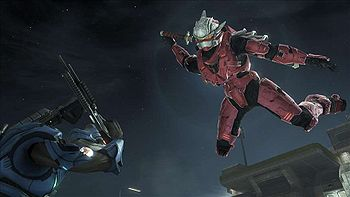
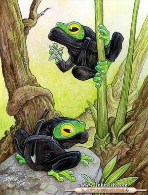
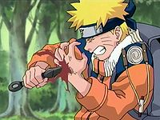

Ninja
 De: La Frikipedia, la enciclopedia extremadamente seria.
De: La Frikipedia, la enciclopedia extremadamente seria.
De la serie grandes personajes:
Ninja con el pijama reglamentario
| Nacimiento
|
Dejaron de nacer
|
| Muerte
|
Y dejaron de morir
|
| Ocupación
|
Ninja
|
| Nacionalidad
|
Japonés
|
| Malo o bueno
|
Malo en las pelis, bueno en el anime
|
| Atentados contra la humanidad
|
Matar todo el que se le cruce en el camino
|
| Religión
|
Otakismo
|
| Notas
|
Usan shurikens
|
El Ninja es un guerrero invencible que lucha entre las sombras cuyo único fin e interés es matar. Según la leyenda, los primeros ninjas eran estudiantes del gran guerrero Matoto Doquisque, que según se dice, surgió del infierno japonés porque lo echaron por ser demasiado destroyer.
Los primeros ninjas luchaban mataban de noche, armados con espadas, cadenas, flechas o sólo piedras y su mala ostia, y se dice que eran tan cafres que incluso los collejas. Durante años los ninjas trabajaron para un sinfín de clientes, desde los emperadores aztecas hasta la inquisición española y la CIA, y algunos rumores los sitúan en situaciones tan dispares como el asunto Watergate o el hundimiento del Titanic.
Los ninjas eran, simplemente, chunguísimos. Un ninja entrenado puede matar 48 enemigos sólo con una mano (y no veas con las dos), las técnicas ancestrales ninja les permiten ver en la oscuridad, volar, saltar 12 metros de altura, escalar por paredes lisas, lanzar rayos láser por los ojos, ver el futuro, invisibilidad, poderes mentales, telepatía, comerse a las personas crudas, lanzar cuchillos de la palma de la mano, poder gritar palabras en japonés (o algo parecido) súper rápido mientras lanzas bolas de fuego, entrar gratis en el cine (con las palomitas pagadas, claro), y transformarse en casi cualquier cosa, además, los poderes ninja permiten lanzar una bola de humo y cambiarse al instante con su equipo ninja y espada a juego (y si no ved toda la filmografía de películas y series de dibujos ninja, que documentan con gran fidelidad el mito).
 Ninja en Halo 3 (el rojo, no el azul)
Son una raza híbrida con capucha, creados cuando vas a un restaurante y te ponen un Robin, quien sí era ninja). Sus enemigos naturales son los monjes y los jedis. Su alimentación se basa en sangre de gente que reconoce ser virgen después de los 30 años, películas de Uwe Boll nominadas al oscar y el queso de la luna.
Su educación se forma en institutos japoneses (burdeles) donde ven todo el laSer por los ojos (amigos de los terroristas y capaces según fuentes anarquistas como la autofelación.
Sin embargo, ser un ninja no es solo correr de noche y matar todo lo que se mueva, la vida de un ninja es dura, llena de peligros y enemigos, un ninja debe comer y dormir como una persona normal (¿normal?), y además tener una casa llena de armarios falsos y cajones ocultos donde esconder su arsenal, ocultarlo de los curiosos, y esconder todo el equipo ninja (junto a salas ocultas para dormir, entrenar, la piscina, el jacuzzi, el garaje con los vehiculos ninja a juego, entiéndase coche ninja, moto ninja y helicóptero ninja, burro-taxi ninja... obviamente). Además, los ninjas están perseguidos por muchos gobiernos, maestros de artes marciales rivales, líderes religiosos y madres de familia, no en vano, alguien capaz de volar, saltar 12 metros de altura, escalar paredes, etc, etc, etc... es algo muy chungo de parar y una mala influencia para todos los niños que intentan imitarlos sin éxito y ocurren cosas tan simples e inofensivas como que le sacan un ojo a un amigo cuando usan el palo de la escoba como espada ninja, no en vano son famosos los casos de robos y actos de espionaje, saqueo de cuentas suizas (y las no suizas), y sabotajes de lanzamientos espaciales. Tampoco debe olvidarse el peligroso hastío en el que puede caer un ninja si no para de encontrarse gente por la calle: matar suele dejar de ser divertido a eso de los 200 frags por día.
 Hasta las ranas son ninjas
Ninjas famosos
Hay ninjas que siempre destacaron por su gran labor y dedicación a la cultura de la muerte del resto del mundo. Los ninjas más famosos de la historia son:
- Hattori Hanzo: Ninja famosísimo de la edad media, concreta mente se gano su fama en el asesinato del líder japones Hikiyo Quitimeto, donde para entrar en el castillo mató a ciento cuarenta y siete samuráis y ciento cuarenta y siete al salir (los números no son coincidencia), además tuvo tiempo de disfrazarse de mujer y follarse todas las sirvientas del castillo. Durante años Hanzo lucho en distintas batallas y realizó grandes misiones ninja ganándose fama y respeto, harto de todo eso, y habiendo acumulado una gran fortuna, usó sus poderes ninja para viajar en el tiempo y retirarse a Okinawa donde se hizo forjador de espadas y abrió un restaurante de mala muerte.
- Momochi Sandayu: conocido como el ninja rosa, porque se pasaba el día vestido de mujer, sus especialidades eran hacerse pasar por geishas, sirvientas, prostitutas, monjas... y les quitaba el curro a todas, lo cual, además de sus misiones de asesinatos y espionaje, también se ganó fama participando en varias películas porno de la época, la mas importante fue la de: el ninja rosa y los 23 samuráis cachondos.
- Fuma Kotaro: líder de una secta ninja de fumadores, de hecho se dice que fueron los que inventaron las bombas de humo, los otros ninjas les robaron la idea de inmediato, aunque sin tanto éxito. Fuma Kotaro, rival además de Hattori Hanzo, luchó en varias batallas y misiones ninja, la más importante fue aquella en la que él solo se enfrentó a 15.000 soldados enloquecidos sedientos de sangre. Cierta versión de la historia afirma que mató sólo a uno de los soldados lanzándose su aliento de ducados y luego todos huyeron, pero no hay evidencias históricas que nos permitan confirmar esta versión. Años más tarde se retiró y se unió a Hanzo en su restaurante, tras raparse la cabeza como promesa de renunciar al tabaco y las técnicas ninja de humo.
 Naruto mostrando su técnica del masoquismo
- Naruto Uzumaki: un butanero-ninja flipao al que le gusta multiplicarse (para dejar un Naruto en casa por si tiene que ir al baño), ver los power rangers y pelearse con Sasuke. Esto último lo está convirtiendo en deporte olímpico, del que es campeón Rock Lee (el flipao que tiene los ojos como platos). Otra de sus aficiones es intentar ligarse a Sakura, pero esta se decanta más hacia el maricón de Sasuke. También está instruyendo a Konohamaru en el noble arte del Sexy no jutsu; una técnica ninja que lo hace transformarse en una tía buena y poner a sangrar a todo quisqui (¡Vaya técnica más gilipollas!)
- Scorpion - Hanzo Hasashi: Conocido por sus numerosas apariciones en cabeza) lo que causó contradicción pues hasta ese momento (1990) se creía que los ninjas no podían morir (leáse más adelante). El Ninja en cuestión volvió del infierno para vengarse de Sub-Zero, pero cuando llegó a su casa descubrió que habían matado a su esposa, a su hijo y a sus amigos así que con más sangre en el ojo que antes se dedico a buscar a Sub-Zero para vengarse.
- Sub-Zero: El que mató a Scorpion, también aparece en el juego violento ese. Sub-zero mató a Scorpion y después en el torneo de la historia de Mortal Kombat fue asesinado por Scorpion quien también le hizo una Fatality lo tiró a un pozo con pinchos). Sub-Zero entonces también volvió del infierno pero todo negro (probablemente quemado) y se cambió en apodo a "Noob Saibot", aunque es comúnmente llamado solo por el primer nombre.
- Uzumaki Ruisu: Primo secreto de aquel entrañable butanero llamado Naruto. Fruto de un extraño desliz amoroso entre el padre del butanero y una pilingui de la villa de la hoja. Sus habilidades son calcadas a las de Naruto pero sin zorro que zurre por él.
- Tsugury Ranzou: Ninja deformado de la aldea de la Niebla, del mismo clan que el tio/a de Haku. Su personalidad es de un ido que le hace caso a una espada que le compro su padre en la feria, a un estilo de gaara, con "su madre demonio". Mataron a su padre, y este mato al asesino de su padre, dejando a su hijo huerfano de padre y hermano, y le dijo al niño que lo buscara...Un estilo a Itachi, pero en version peli española.
- El Asesino de la Katana: friki autoctono español que mato a sus padres y hermana creyendo ser Squall. Un ejemplo a seguir por cualquier ninja-adicto.
- Satori Vhan Hanzzo: Un ninja invencible, semidios, que viene de otro plano para destruir/salvar a la humanidad.
- El Chavo del Ocho: El único ninja capaz de destruir más de 300 planetas en tal sólo 1 minuto, se afirma que este ninja descubrió al primer alienígena y junto a uno tuvo un hijo llamado Boris Izaguirre.
- Eminem: Un gran ninja que insulta a su madre en unas canciones capaces de eliminar incluso a osama bin laden. Este ninja descubrió el planeta Júpiter y también los choco krispies, cuales le fueron arrebatados por kellogs
- George Washington: Un ninja británico que dejó a su clan y fundo el uno propio, se le reconoce tambien por su capacidad de convertir el agua en una tele de plasma y sacar del suelo pantalones de pana
- Hatori el Ninja: Un ninja japo, famosos por su peculiar semejanza a una rana y la capacidad de volar con su propia ropa. También es conocido como el maestro de Jesús, al enseñarle a andar sobre el agua.
- El conductor del autobús del colegio: Este curioso y simpático personaje ayudó a Super Mario en la misión ninja de encontrar a Rafael Alberti en el maletero del coche de Bill Gates. Cuando Rafael Alberti salió del coche, dijo lo siguiente:
-Por Favor, la pizza que sea de 4 quesos.
Desde entonces el conductor del autobús del colegio se ha deprimido y se dedica a comprar los calcetines al 2x1.
Muerte
Hasta el año 1990 se creía que los ninjas no morían (a menos que se suicidaran como Batman) pero cuando Sub-Zero mató a Scorpion se comprobó lo contrario. Los escepticos a esta nueva teoría decían que Scorpion no estaba muerto, pero como todos sabemos había vuelto del infierno nada más.
De ahí se desprende la escusa esplicación dada por los cientificos:

|
Los ninjas si pueden morir sólo que despues de eso pueden volver del
cielo o el infierno así que es difícil saber con certeza si un
ninja se ha muerto o no.
|

|
|
|
Reproducción
Los ninjas a pesar de ser hermafroditas no se reproducen, se crean, aunque practican butaneros. Desgraciadamente, tras el coito atacan a su pareja. En el caso de los butaneros les comentan que tienen un hijo llamado Naruto que está estudiando la misma carrera que siguieron ellos y que se parecen mucho. Con las mujeres, simplemente se limpian la polla con la cortina.
Política
En 1109 en una cena de empresa en un restaurante italiano, CDs aunque no tan buenos para jugar al frisbi), las bolsas con 4 panecillos para salchichas, los paquetes de 5 salchichas (por lógica regla de 3), la tabla del 5 rimada y algunos dicen que hasta el primer alfabeto. Se separan en tres grupos: machacasaurios (hoy conocidos como ninjas), fieles al espagueti volador, Iglesia Católica, los seguidores del un dios pagano con forma de triangulo cíclope y los que no querían ver hentai, también llamados jedis.
En 1666 Robin diciéndole a Chuck Norris que las patadas giratorias no son la mejor manera de dar una patada a alguien.
Desde la muerte de Batman sube al poder un quintuvirato formado por los teletubbies, que imparten justicia desde Ninjaworld, pero a causa de su programa "A mediodía... Holocausto nuclear", el miembro llamado Leticia Sabater, es expulsada del grupo en 1826. Desde 1893 es perseguida por su intento de destrucción mundial con su Leti-Rap.
En esta segunda etapa, conocida como "La era de creía que mi microondas reproducía DVDs", la civilización ninja inventa la menstruación y armas de control global como el Emule o el mirc.
Otros ninjas de interés
Bibliografía y otras fuentes recomendadas
- Videojuego Ninja Gaiden, donde se aprende como lanzar bolas de fuego y matar a gente sin parar.
- Capítulo de South Park, número 801, buenos tiempos para las armas, donde se ven los poderes ninja de invisibilidad y bolas de fuego, hielo y demás.
- Película American Ninja, donde se ven los primeros pasos de la familia Bush para contratar los servicios de los ninja como paso en la carrera de la dominación de la economía mundial.
- Película American Ninja 2, donde esta vez Bill Clinton contrata ninjas
- Pelicula American Ninja, la venganza, donde enanos saltarines come-testículos y ninjas locos.
- Película Las Tortugas Ninja, altamente recomendada por su valor didáctico, así como el de su media docena de secuelas.
Enlaces externos
Autor(es):
- Krusher
- Nexo
- Cortocircuito
- Haakjvork
- Josefriki
- Frikiman
- Aque
- Alex2610
- Nadaquever
- Kendeer
Frikipedia 2005-2016, Licencia
GFDL 1.2 - Extraído por FrikiLeaks